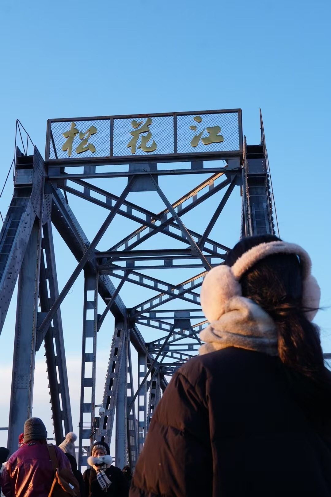
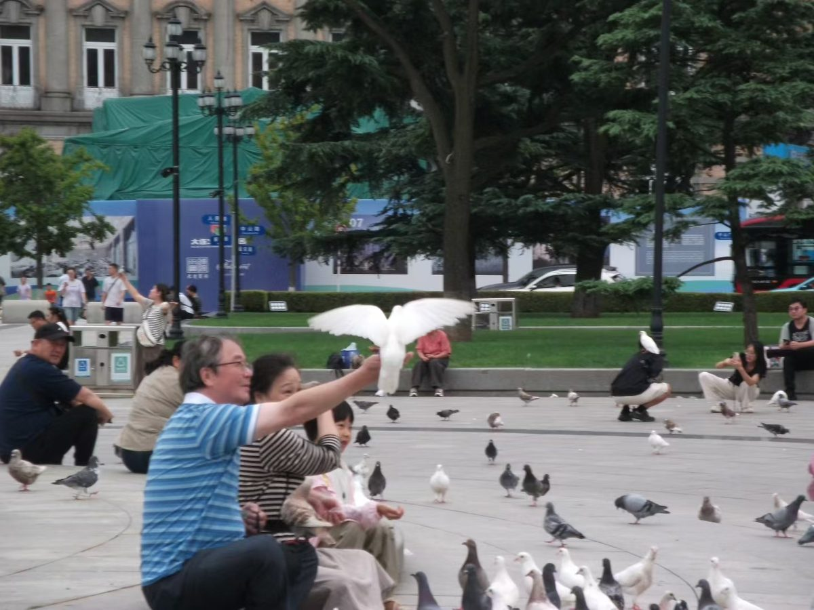

摄影记录
定格生活的美好瞬间，善于捕捉人像与自然风光，同时将摄影美感应用到日常内容矩阵和新媒体物料设计中。
Hobbies
从摄影、旅行、纪录片到 vlog，兴趣本身也是观察世界、理解用户和捕捉内容灵感的入口。


定格生活的美好瞬间，善于捕捉人像与自然风光，同时将摄影美感应用到日常内容矩阵和新媒体物料设计中。
热爱生活、乐于尝试新鲜事物。在旅途中拓宽视野，深入不同地方进行观察，并结合社会学视角形成洞察。
喜欢通过纪录片了解不同人群、地域和议题，在真实故事里训练观察力，也为内容选题和社会洞察积累素材。
喜欢观看和记录 vlog，关注日常叙事、镜头节奏和情绪表达，也会把这种松弛真实的表达方式用于内容创作。
保持活力与运动习惯，打羽毛球锻炼专注度与爆发力，爬坡和户外运动锻炼意志力。
追剧、动漫文化和二次元爱好者，对社群热点和粉丝心理有敏感度，曾主理网易云音乐“小喇叭”小红书账号。